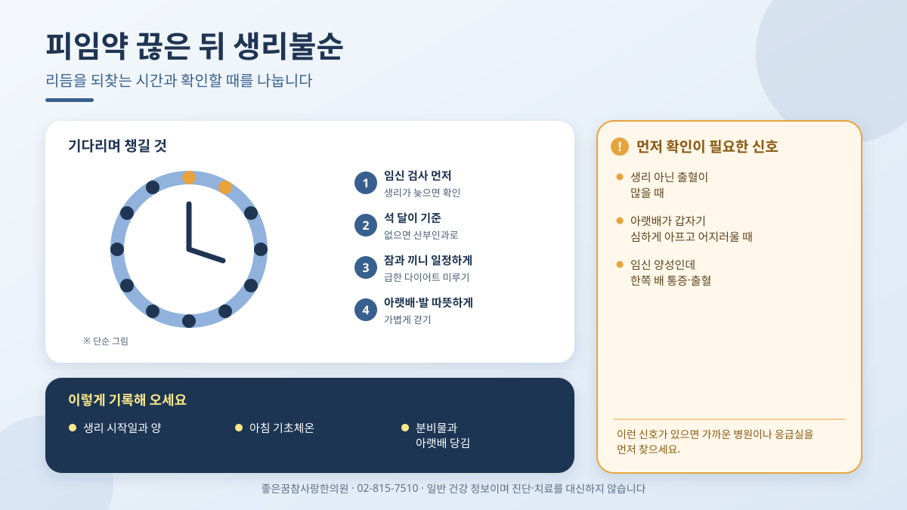

이종호 한의사 감수좋은꿈참사랑한의원 대표원장 (한의사 면허번호 19769)발행 2026-11-26 · 수정 2026-11-27
이 글의 차례
- 피임약은 몸에서 어떤 일을 했을까요?
- 왜 끊은 뒤 생리가 늦어지거나 불규칙할까요
- 먼저 임신 가능성을 확인합니다
- 언제 산부인과 검사가 필요할까요?
- 비슷해 보이지만 다른 이유들
- 몸이 보내는 배란의 신호
- 다시 약을 먹어야 할지 고민될 때
- 약 먹기 전의 불편이 돌아올 때
- 주사나 루프 같은 다른 방법을 쓰셨다면
- 기다리는 마음이 조급할 때
- 몸무게와 식사가 주기에 주는 영향
- 먼저 이렇게 여쭙니다
- 일상에서 먼저 해 볼 수 있는 것
- 한의원에서 함께 살필 수 있는 경우
- 이렇게 기록해 오시면 상담이 쉬워집니다
- 몸의 시계가 다시 돌아가기까지
- 이런 증상은 먼저 확인이 필요합니다
- 함께 읽으면 좋은 글
몇 년 동안 매일 같은 시각에 작은 알약을 챙겨 먹었어요. 그동안 생리는 달력처럼 정확히 찾아왔죠. 이제 임신을 준비하려고, 혹은 더는 필요하지 않아서 약을 끊었습니다. 그런데 한 달이 지나고 두 달이 지나도 생리가 소식이 없어요. 혹시 몸에 문제가 생긴 건 아닐까, 마음이 조급해집니다.
진료실에서 저는 이런 걱정을 자주 들어요. 약을 먹는 동안에는 규칙적이었는데 끊고 나니 주기가 들쭉날쭉하다고, 언제까지 기다려야 하는지 모르겠다고 하세요. 특히 임신을 준비하시는 분이라면 하루하루가 더 길게 느껴지실 거예요.
여기서 두 가지를 나눠 두시면 덜 헷갈려요. 약을 먹는 동안 오던 출혈은 약이 만들어 준 주기였고, 약을 끊은 뒤의 주기는 몸이 스스로 만드는 주기예요. 같은 '생리'라도 다른 얘기인 거죠. 그래서 약을 끊고 나면 몸이 자기 리듬을 다시 찾는 데 시간이 걸리는 경우가 많아요. 원래 그래요.
대부분은 몇 달 안에 몸이 스스로 리듬을 되찾지만, 그 사이 무엇을 확인하고 언제 검사를 받아야 하는지 알고 계시면 덜 불안하게 기다리실 수 있어요.
이 글에서는 피임약을 끊은 뒤 생리가 늦어지는 이유, 먼저 확인할 것, 산부인과 검사가 필요한 때, 그리고 한의원에서 함께 살피는 생활 리듬을 차례로 말씀드릴게요.
피임약은 몸에서 어떤 일을 했을까요?
경구 피임약은 몸 밖에서 일정한 양의 여성 호르몬을 넣어 주어 배란을 쉬게 하는 약입니다. 약을 먹는 동안의 생리는 자연스러운 배란 뒤의 생리가 아니라, 약을 쉬는 기간에 호르몬이 줄면서 생기는 출혈에 가깝습니다. 그래서 날짜가 거의 정확하게 맞습니다.
약을 끊으면 몸은 그동안 쉬고 있던 배란 리듬을 스스로 다시 시작해야 합니다. 뇌와 난소가 서로 신호를 주고받으며 호르몬의 오르내림을 되살리는 데에는 시간이 필요합니다. 이 시간이 사람마다 다르기 때문에 생리가 돌아오는 시기도 제각각입니다.
약을 끊고 처음 찾아오는 출혈은 약을 쉬는 기간의 출혈과 비슷한 것일 수 있습니다. 그다음 생리부터가 몸이 스스로 만든 주기라고 보시면 됩니다. 그래서 두 번째 생리가 늦어지는 경우가 흔합니다.
왜 끊은 뒤 생리가 늦어지거나 불규칙할까요
가장 흔한 이유는 몸이 리듬을 되찾는 데 걸리는 시간입니다. 대개 약을 끊고 몇 달 안에 주기가 돌아오지만, 처음 몇 번은 주기가 길거나 짧고 양도 들쭉날쭉할 수 있습니다. 이 기간을 지나며 서서히 자리를 잡아 갑니다.
두 번째 이유는 약을 먹기 전부터 있던 상태가 다시 드러나는 경우입니다. 원래 생리가 불규칙해서 약을 시작했다면, 약을 끊은 뒤 그 모습이 다시 나타나는 것은 자연스러운 일입니다. 다낭성 난소 증후군처럼 약을 먹는 동안 가려져 있던 상태가 이때 드러나기도 합니다.
세 번째는 생활의 변화입니다. 체중이 크게 늘거나 줄었거나, 운동량이 갑자기 많아졌거나, 스트레스와 잠 부족이 이어지면 약과 상관없이 주기가 흔들릴 수 있습니다. 약을 끊은 시기와 이런 변화가 겹쳤는지도 함께 살펴봅니다.
먼저 임신 가능성을 확인합니다
피임약을 끊으면 첫 주기부터 배란이 다시 시작될 수 있습니다. 생리가 늦어졌다면 가장 먼저 임신 가능성을 확인하시는 것이 좋습니다. 약국에서 살 수 있는 임신 검사지로 아침 첫 소변을 이용해 확인해 보세요.
검사가 음성인데도 생리가 계속 없다면 며칠에서 일주일 뒤에 한 번 더 해 보시길 권합니다. 배란이 늦게 된 경우 처음에는 음성으로 나오다가 나중에 양성으로 바뀌기도 합니다.
임신을 준비하고 계신다면 이 시기부터 엽산을 챙기시고, 술과 담배를 줄이시는 것이 좋습니다. 구체적인 준비는 다니시는 산부인과와 상의해 정하세요.
언제 산부인과 검사가 필요할까요?
약을 끊고 석 달이 지나도 생리가 한 번도 없다면 산부인과에서 확인을 받아 보시길 권합니다. 호르몬 검사와 초음파로 배란이 잘 되고 있는지, 다른 이유가 있는지 살펴볼 수 있습니다.
석 달이 지나지 않았더라도 젖이 나오는 느낌, 얼굴과 몸의 털이 갑자기 늘어나는 변화, 심한 여드름, 이유 없는 체중 변화, 심한 피로나 추위를 많이 타는 느낌이 함께 있다면 조금 더 일찍 확인해 보시는 것이 좋습니다.
임신을 준비하시는 분이라면 나이와 상황에 따라 더 일찍 상담을 받는 것이 도움이 될 수 있습니다. 혼자 기다리며 마음을 졸이기보다 산부인과에서 지금 상태를 확인하고 계획을 세우시면 마음이 한결 편해집니다.
비슷해 보이지만 다른 이유들
피임약을 끊은 시기에 생리가 늦어졌다고 해서 모두 약 때문은 아닙니다. 아래와 같은 이유가 함께 있을 수 있어 하나씩 살펴봅니다.
- 다낭성 난소 증후군처럼 배란이 드물어지는 상태
- 갑상선 기능이 너무 높거나 낮은 상태
- 젖 분비 호르몬이 높아진 상태
- 급격한 체중 감소나 과도한 운동
- 큰 스트레스와 잠 부족이 오래 이어진 상태
이런 상태는 대부분 혈액 검사와 초음파로 확인할 수 있습니다. 그래서 기다리는 기간이 길어진다면 검사를 받아 보시는 것이 오히려 마음을 덜어 주는 길이 됩니다.
몸이 보내는 배란의 신호
몸이 다시 배란을 시작하면 작은 신호들이 나타납니다. 생리와 생리 사이에 맑고 잘 늘어나는 분비물이 늘거나, 한쪽 아랫배가 살짝 당기거나, 가슴이 조금 예민해지는 변화가 대표적입니다.
아침에 일어나자마자 체온을 재서 적어 두는 기초체온 기록도 도움이 됩니다. 배란이 되면 체온이 조금 올라가 생리 전까지 유지되는 모습이 보입니다. 숫자 하나하나보다 한 달 동안의 흐름을 보시면 됩니다.
배란 테스트기를 쓰시는 분도 계십니다. 주기가 불규칙한 시기에는 결과를 해석하기 어려울 수 있으니, 결과에 너무 마음을 쓰기보다 참고 정도로 활용하시길 권합니다.
다시 약을 먹어야 할지 고민될 때
생리가 불규칙해서 다시 피임약을 먹어야 하나 고민하시는 분도 계십니다. 피임약을 다시 먹으면 출혈은 규칙적으로 돌아오지만, 몸이 스스로 만든 주기가 돌아온 것은 아닙니다.
다시 약을 드실지, 다른 방법을 쓰실지는 지금의 목표에 따라 달라집니다. 임신을 준비하시는지, 생리통이나 여드름 조절이 필요하신지에 따라 선택이 달라지니 산부인과 선생님과 상의해 정하세요.
약 먹기 전의 불편이 돌아올 때
피임약을 생리통이나 여드름 때문에 드셨던 분이라면, 끊고 나서 그 불편이 다시 찾아올 수 있습니다. 약이 눌러 주던 것이 사라지면서 원래 몸의 모습이 드러나는 것이지요. 갑자기 나빠진 것처럼 느껴져 놀라실 수 있지만, 대부분 약을 먹기 전의 상태로 돌아가는 과정입니다.
이 시기에 턱과 볼에 여드름이 늘거나 생리통이 심해졌다면 기록해 두세요. 생리 주기와 함께 놓고 보면 어느 시기에 불편이 커지는지 보이고, 그에 맞춰 생활과 진료 방향을 정하기 쉬워집니다.
주사나 루프 같은 다른 방법을 쓰셨다면
먹는 약 말고도 호르몬 주사, 피부에 붙이는 패치, 자궁 안에 넣는 장치처럼 다양한 피임 방법이 있습니다. 방법에 따라 끊은 뒤 주기가 돌아오는 시기가 다를 수 있습니다. 특히 호르몬 주사는 끊은 뒤 배란이 돌아오기까지 더 오래 걸리는 경우가 있습니다.
그래서 진료실에서는 어떤 방법을 얼마나 쓰셨는지 정확히 여쭙니다. 기억이 나지 않으시면 처방받은 병원 기록을 확인해 오시면 도움이 됩니다.
기다리는 마음이 조급할 때
임신을 준비하시는 분이라면 생리가 늦어질 때마다 마음이 크게 흔들립니다. 검사지를 여러 번 확인하고, 인터넷에서 비슷한 이야기를 찾아보다 밤을 새우기도 합니다. 그 마음이 충분히 이해됩니다.
그런데 걱정과 긴장이 오래 이어지면 잠이 얕아지고, 그것이 다시 주기를 흔드는 고리가 생길 수 있습니다. 하루 중 걱정을 내려놓는 시간을 따로 정해 두고, 몸을 따뜻하게 하고 가볍게 걷는 시간을 챙겨 주세요. 혼자 끌어안기보다 함께 이야기 나눌 사람을 곁에 두시는 것도 큰 힘이 됩니다.
몸무게와 식사가 주기에 주는 영향
호르몬은 몸에 충분한 에너지가 있다고 느낄 때 안정적으로 오르내립니다. 끼니를 자주 거르거나 갑자기 식사량을 크게 줄이면 몸은 지금은 배란을 쉬어야 할 때라고 받아들이기 쉽습니다. 그래서 약을 끊은 시기에 다이어트를 함께 시작하셨다면 주기가 더 늦게 돌아올 수 있습니다.
반대로 체중이 짧은 기간에 크게 늘어도 주기가 흔들릴 수 있습니다. 아침, 점심, 저녁을 일정한 시각에 드시고 단 음식과 야식을 조금씩 줄여 가는 정도가 몸에 무리를 주지 않으면서 리듬을 돕는 방법입니다.
먼저 이렇게 여쭙니다
처음 오시면 대략 이런 순서로 여쭙니다. 미리 정리해 오시면 이야기가 수월해집니다.
- 피임약을 얼마나 드셨고, 언제 끊으셨나요?
- 약을 먹기 전 생리 주기와 양은 어땠나요?
- 약을 시작한 이유는 무엇이었나요?
- 끊은 뒤 생리는 몇 번, 며칠 간격으로 있었나요?
- 체중, 운동량, 잠, 스트레스에 달라진 점이 있나요?
- 임신을 준비하고 계신가요? 임신 검사는 해 보셨나요?
기억이 정확하지 않으셔도 괜찮습니다. 휴대폰 생리 기록 앱이 있다면 화면을 보여 주셔도 큰 도움이 됩니다.
가족 가운데 생리불순이나 갑상선 질환, 이른 폐경을 겪으신 분이 있는지도 함께 여쭙니다. 가족력이 있다고 같은 길을 걷는 것은 아니지만, 검사 시기를 정할 때 참고가 됩니다.
일상에서 먼저 해 볼 수 있는 것
몸이 스스로 리듬을 되찾는 동안 생활의 리듬을 일정하게 해 주면 도움이 됩니다.
- 잠드는 시각과 일어나는 시각을 일정하게 맞추기
- 끼니를 거르지 않고 단백질과 채소를 고루 챙기기
- 급격한 다이어트나 지나친 운동은 잠시 미루기
- 아랫배와 발을 차갑게 두지 않기
- 생리 날짜와 양, 분비물 변화를 기록하기
- 마음이 조급할 때는 하루 15분 걷기
몸은 생각보다 많은 것을 기억합니다. 잠과 식사가 일정해지면 호르몬의 리듬도 그에 맞춰 조금씩 자리를 잡아 갑니다. 너무 조급해하지 마시고 몇 달을 내다보며 지켜봐 주세요. 그 사이 몸이 보내는 작은 신호를 적어 두시면 됩니다.
한의원에서 함께 살필 수 있는 경우
- 약을 끊은 뒤 주기가 길어지고 양이 줄어든 경우
- 생리 전후로 아랫배가 차고 묵직하며 손발이 찬 경우
- 잠이 얕고 피로가 쌓이며 주기가 흔들리는 경우
- 생리통이나 생리 전 불편이 다시 심해진 경우
- 산부인과 검사에서 큰 이상은 없다는데 주기가 자리 잡지 않는 경우
좋은꿈참사랑한의원에서는 맥을 짚고 잠, 소화, 대소변, 손발과 아랫배 온도를 여쭌 뒤 몸 전체의 흐름을 살핍니다. 진찰한 내용을 바탕으로 침, 온열 관리, 한약 상담 가운데 지금 상태에 맞는 것을 함께 정합니다.
한약을 상의할 때는 드시는 약과 영양제를 모두 확인하고 신중하게 정합니다. 임신을 준비 중이거나 임신 가능성이 있다면 먼저 알려 주시고, 산부인과와 상의하며 진행합니다.
이렇게 기록해 오시면 상담이 쉬워집니다
두세 달 정도 간단히 적어 오시면 몸이 리듬을 되찾아 가는 모습이 보입니다.
- 생리 시작일과 끝난 날, 양의 변화
- 아침 기초체온(가능하다면)
- 분비물의 변화와 아랫배 당김
- 잠든 시각과 깬 시각, 피로가 심했던 날
- 체중과 운동량의 변화
산부인과에서 받은 검사 결과지가 있다면 함께 가져와 주세요. 결과지의 숫자를 다 이해하지 못하셔도 괜찮습니다. 결과를 나란히 놓고 보면 지금 어디까지 왔는지 함께 이해하기 쉽습니다.
몸의 시계가 다시 돌아가기까지
피임약을 끊은 뒤의 불규칙한 주기는 대부분 몸이 스스로 리듬을 다시 맞춰 가는 과정이에요. 기다리는 시간이 길게 느껴지실 수 있지만, 그 사이 확인할 건 확인하고 생활을 다듬어 두면 몸이 제 속도를 찾는 데 도움이 될 수 있어요.
조급한 마음, 충분히 이해해요. 그런데 몸의 시계는 재촉한다고 빨리 돌지 않거든요. 그래서 저는 기다리는 동안 할 일을 많이 드리지 않아요.
몸의 흐름을 살피는 건 제가 맡을게요. 대신 하나만 부탁드려요. 이번 달에는 생리 날짜와 잠든 시각, 이 두 줄만 적어 주세요. 딴 건 하시던 대로 편하게 하셔도 돼요. 그 두 줄이 몇 달 쌓이면 산부인과에서도, 저한테서도 훨씬 정확한 얘기를 나눌 수 있어요.
다음에 오시면 기록을 함께 펼쳐 보며 그다음 걸음을 같이 정할게요. 궁금한 건 그냥 편하게 물어보세요.
이런 증상은 먼저 확인이 필요합니다
- 생리가 아닌 때 출혈이 많고 아랫배가 갑자기 심하게 아프며 어지러운 경우
- 임신 검사가 양성인데 한쪽 아랫배 통증이나 출혈이 함께 있는 경우
이런 신호가 있으면 한의원보다 가까운 병원이나 응급실을 먼저 찾으세요.
함께 읽으면 좋은 글
- 월경 주기가 불규칙할 때 한의원에서는 무엇을 먼저 확인하나요?
- 생리가 몇 달째 없을 때(무월경)는 무엇을 먼저 확인하고 어떻게 살피나요?
- 다낭성 난소 증후군이 있을 때 생활과 생리 주기는 어떻게 살피나요?
- 생리 양이 눈에 띄게 줄어든 과소월경은 무엇을 확인하고 어떻게 살피나요?
- 체중이 갑자기 늘거나 줄고 나서 생리 주기가 불규칙해졌을 때는 어떻게 하나요?

여쭙는 것
- 피임약을 얼마나 드셨고, 언제 끊으셨나요?
- 약을 먹기 전 생리 주기와 양은 어땠나요?
- 약을 시작한 이유는 무엇이었나요?
생활에서 해 볼 것
- 잠드는 시각과 일어나는 시각을 일정하게 맞추기
- 끼니를 거르지 않고 단백질과 채소를 고루 챙기기
- 급격한 다이어트나 지나친 운동은 잠시 미루기
한의원에서 함께 살필 것
- 약을 끊은 뒤 주기가 길어지고 양이 줄어든 경우
- 생리 전후로 아랫배가 차고 묵직하며 손발이 찬 경우
- 잠이 얕고 피로가 쌓이며 주기가 흔들리는 경우
먼저 확인이 필요한 신호
- 생리가 아닌 때 출혈이 많고 아랫배가 갑자기 심하게 아프며 어지러운 경우
- 임신 검사가 양성인데 한쪽 아랫배 통증이나 출혈이 함께 있는 경우
한눈에 보는 표
| 구분 | 핵심 |
|---|---|
| 여쭙는 것 | 피임약을 얼마나 드셨고, 언제 끊으셨나요? 약을 먹기 전 생리 주기와 양은 어땠나요? |
| 생활에서 해 볼 것 | 잠드는 시각과 일어나는 시각을 일정하게 맞추기 끼니를 거르지 않고 단백질과 채소를 고루 챙기기 |
| 한의원에서 함께 살필 것 | 약을 끊은 뒤 주기가 길어지고 양이 줄어든 경우 생리 전후로 아랫배가 차고 묵직하며 손발이 찬 경우 |
| 먼저 확인이 필요한 신호 | 생리가 아닌 때 출혈이 많고 아랫배가 갑자기 심하게 아프며 어지러운 경우 임신 검사가 양성인데 한쪽 아랫배 통증이나 출혈이 함께 있는 경우 |
자주 묻는 질문
피임약을 오래 먹으면 나중에 임신이 어려워지나요?
대부분은 약을 끊고 몇 달 안에 배란이 돌아옵니다. 다만 원래 있던 상태가 다시 드러날 수 있어, 석 달이 지나도 생리가 없거나 임신 준비가 길어지면 산부인과에서 확인을 받아 보세요.
약을 끊고 얼마나 기다려 봐도 되나요?
보통 석 달 정도를 하나의 기준으로 봅니다. 석 달이 지나도 생리가 없거나 다른 변화가 함께 있다면 산부인과 진료를 권합니다.
생리가 늦는데 임신 검사는 언제 하나요?
생리 예정일이 지났다면 아침 첫 소변으로 해 보세요. 음성이어도 생리가 계속 없다면 며칠에서 일주일 뒤에 한 번 더 해 보시길 권합니다.
임신 준비 중인데 한약을 먹어도 되나요?
임신을 준비 중이시라는 것을 먼저 알려 주시면 그에 맞춰 신중하게 정합니다. 임신 가능성이 있는 시기에는 산부인과와 상의하며 진행합니다.
한의원에서 호르몬 검사를 받을 수 있나요?
호르몬 검사나 초음파로 배란을 확인하는 것은 산부인과에서 받으시도록 안내합니다. 한의원에서는 진맥과 문진으로 잠, 소화, 온도처럼 몸 전체의 흐름을 함께 살핍니다.
좋은꿈참사랑한의원은 재진 때 지난번 이야기부터 이어서 여쭙니다. 진료시간과 예약은 오시는 길에서 확인하세요.
어디서 상담받을 수 있나요?
좋은꿈참사랑한의원은 서울 동작구 만양로2길 2 신성빌딩 3층·5층(서울 동작구 상도동, 7호선 상도역 3번 출구 근처)에 있습니다. 한의사 3명(이종호 대표원장, 조영기 수석진료원장, 정원영 진료원장)이 진료합니다. 진료시간은 평일 09:30~20:00(점심 13:00~14:00), 토·일·공휴일 09:30~15:00이며, 방문 전 전화로 확인을 권합니다. 예약은 네이버 예약, 카카오톡 상담, 전화 02-815-7510로 받습니다.
이 글은 일반적인 건강 정보이며 개인의 진단이나 치료를 대신하지 않습니다. 증상이 있거나 복용 중인 약이 있다면 진료를 통해 확인하세요. 치료 효과는 개인마다 다를 수 있습니다.
작성 기준: 일반적으로 알려져 있는 건강 정보를 참고해 정리했습니다(대표원장 감수). 증상 기록은 1~2주 동안 하루 1회, 비슷한 시간에 적어 오시면 지난 상태와 비교하기 쉽습니다.